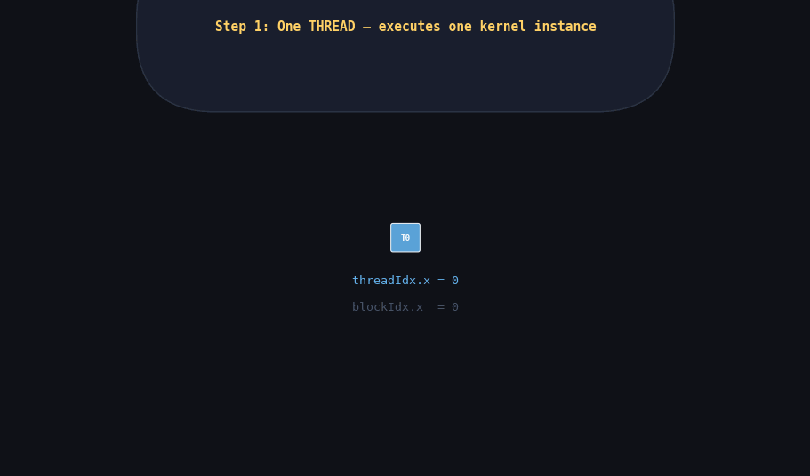

When you write a CUDA kernel, you are writing a function that will be executed by thousands — often millions — of threads simultaneously. Each of those threads runs the exact same code. What makes them do different work is where they live in the thread hierarchy and how they compute their unique index from the built-in variables CUDA provides. Get this mental model wrong and every kernel you write will either produce incorrect results or crash in ways that are maddeningly difficult to reproduce.
This post builds the complete mental model from the ground up: individual threads, how they group into blocks, how blocks tile into grids, how the GPU's streaming multiprocessors execute all of it, and the practical mechanics of launching kernels with the right configuration. By the end you will be able to write and reason about kernels over arrays, matrices, and volumes without hesitation.
Table of Contents
1. The Three-Level Thread Hierarchy
CUDA organizes its threads into a strict three-level hierarchy: threads live inside blocks, which live inside a grid. This is not an arbitrary software design decision — it directly reflects the hardware structure of the GPU, specifically the relationship between CUDA cores and streaming multiprocessors (SMs).
Level 1: The Thread
A thread is the smallest unit of execution in CUDA. Each thread runs your kernel function independently. It has its own:
- Program counter (it steps through instructions independently of other threads)
- Register file (local variables live here — not shared with any other thread)
- Local memory stack (for local arrays and function call frames that spill from registers)
- Three built-in index variables:
threadIdx.x,threadIdx.y,threadIdx.z
threadIdx tells a thread where it sits within its block. If a
block has 256 threads arranged in a 1D line, they are numbered
threadIdx.x = 0, 1, 2, ..., 255. That is all a thread knows about itself
from threadIdx alone — it does not know which block it is in. For
that you need blockIdx.
Threads execute in groups of 32 called warps. A warp is the true hardware execution unit: all 32 threads in a warp execute the same instruction in the same clock cycle (SIMT — Single Instruction, Multiple Thread). If threads in a warp diverge at a branch (some take the if-path, some take the else-path), the hardware serializes execution: it runs one path with the other threads masked off, then runs the other path with the first threads masked. This is warp divergence, and it halves throughput in the worst case. We cover warps in detail in Phase 4, but you need to know they exist because they are why block sizes must be multiples of 32.
Level 2: The Block
A block is a group of threads — up to 1024 total. Every thread in a block is guaranteed to run on the same SM (streaming multiprocessor). This co-location enables two critical capabilities that cross-block threads simply do not have:
- Shared memory: A fast, programmer-managed on-chip scratchpad (typically 48–96 KB per SM on Ampere-class GPUs, configurable from L1 cache). All threads in the block can read and write to the same shared memory buffer. Latency is ~4 cycles compared to ~600 cycles for global DRAM — roughly 100× faster. Shared memory is the single most important performance lever in CUDA programming.
-
__syncthreads(): A barrier synchronization primitive. When any thread hits__syncthreads(), it waits until every thread in its block has also reached that point. This guarantees that shared memory writes by any thread are visible to all other threads before execution proceeds past the barrier. Without this, shared memory accesses between threads create data races with undefined behavior.
Blocks have their own index: blockIdx.x, blockIdx.y,
blockIdx.z. The dimensions of a block are given by
blockDim.x, blockDim.y, blockDim.z, which
are identical constants for every thread in the launch.
Block dimensions can be 1D, 2D, or 3D. A 1D block of 256 threads has
blockDim.x=256, blockDim.y=1, blockDim.z=1. A 2D block of
16×16 threads has blockDim.x=16, blockDim.y=16, blockDim.z=1.
The total number of threads in any block must not exceed 1024.
Level 3: The Grid
A grid is the collection of all blocks launched by a single kernel invocation.
Grids are also 1D, 2D, or 3D. gridDim.x, gridDim.y,
gridDim.z give the number of blocks in each dimension.
The critical distinction between blocks and threads: blocks are independent of each other. There is no synchronization primitive that works across blocks in the same kernel invocation (only ending the kernel and launching a new one achieves inter-block sync). Blocks can run in any order, in parallel on different SMs, or even sequentially if the GPU has few SMs. You must never write code that assumes block 0 finishes before block 1 starts, or that blocks run in any particular order.
A grid of 1,000 blocks on a GPU with 2 SMs runs ~500 blocks per SM sequentially. The same identical grid on an A100 with 108 SMs runs ~9 blocks per SM, finishing roughly 50× faster. Your code does not change. The runtime scheduler maps blocks to SMs automatically, and because blocks are independent, the scheduler is free to assign them in whatever order is most efficient. This is the fundamental scalability mechanism of CUDA: write once, scale to any GPU automatically.
The Full Mapping: Thread Hierarchy to Hardware
CUDA PROGRAMMING MODEL GPU HARDWARE
┌──────────────────────────────┐ ┌──────────────────────────────────────┐
│ GRID │ │ GPU Die │
│ (one per kernel launch) │ │ │
│ │ │ ┌───────────────┐ ┌─────────────┐ │
│ ┌──────────┐ ┌──────────┐ │ │ │ SM 0 │ │ SM 1 │ │
│ │ Block │ │ Block │ │ │ │ │ │ │ │
│ │ (0,0) │ │ (1,0) │ │──────▶│ │ Block (0,0) │ │ Block (1,0)│ │
│ │ │ │ │ │ │ │ │ │ │ │
│ │ T T T T │ │ T T T T │ │ │ │ Warp 0 (32T) │ │ Warp 0(32T)│ │
│ │ T T T T │ │ T T T T │ │ │ │ Warp 1 (32T) │ │ Warp 1(32T)│ │
│ │ T T T T │ │ T T T T │ │ │ │ Warp 2 (32T) │ │ Warp 2(32T)│ │
│ │ T T T T │ │ T T T T │ │ │ │ Warp 3 (32T) │ │ Warp 3(32T)│ │
│ └──────────┘ └──────────┘ │ │ │ │ │ │ │
│ │ │ │ Shared Memory │ │ Shared Mem │ │
│ ┌──────────┐ ┌──────────┐ │ │ │ (48-96 KB) │ │ (48-96 KB) │ │
│ │ Block │ │ Block │ │ │ └───────────────┘ └─────────────┘ │
│ │ (0,1) │ │ (1,1) │ │ │ │
│ │ │ │ │ │ │ ┌───────────────┐ ┌─────────────┐ │
│ │ T T T T │ │ T T T T │ │ │ │ SM 2 │ │ SM 3 │ │
│ │ T T T T │ │ T T T T │ │ │ │ Block (0,1) │ │ Block (1,1)│ │
│ │ T T T T │ │ T T T T │ │ │ │ ... │ │ ... │ │
│ │ T T T T │ │ T T T T │ │ │ └───────────────┘ └─────────────┘ │
│ └──────────┘ └──────────┘ │ │ │
└──────────────────────────────┘ │ ( ... more SMs ... ) │
└──────────────────────────────────────┘
RULES:
✓ One block maps to exactly ONE SM (a block never spans SMs)
✓ One SM can run MULTIPLE blocks simultaneously (resource permitting)
✓ Threads in a block share one pool of shared memory
✓ __syncthreads() only synchronizes threads within the same block
✗ Blocks can run in ANY ORDER -- never assume ordering between blocks
✗ There is NO shared memory between blocks
Thread → Block → Grid → SM mapping. Each block maps to exactly one SM, but an SM can run multiple blocks simultaneously depending on resource availability (registers, shared memory, and warp slots). On an A100 with 108 SMs, a grid of 10,800 blocks gives exactly 100 blocks per SM at peak — the scheduler fills every available slot and the GPU runs at full utilization.
Hardware Limits
| Dimension | Maximum blockDim | Maximum gridDim | Notes |
|---|---|---|---|
| x | 1024 | 2,147,483,647 | gridDim.x up to 2^31-1 |
| y | 1024 | 65,535 | gridDim.y up to 2^16-1 |
| z | 64 | 65,535 | blockDim.z capped at 64 |
| Total threads/block | 1024 | — | Product of x*y*z must be ≤ 1024 |
2. Built-in Variables
CUDA provides four built-in variables accessible inside every kernel. They are automatically populated by the hardware before your kernel code begins. They are read-only from kernel code — you cannot assign to them. They live in special hardware registers and cost zero memory bandwidth to access.
| Variable | Type | Meaning | Valid Range |
|---|---|---|---|
| threadIdx.x / .y / .z | uint3 | Thread index within its block | 0 to blockDim.{x,y,z} - 1 |
| blockIdx.x / .y / .z | uint3 | Block index within the grid | 0 to gridDim.{x,y,z} - 1 |
| blockDim.x / .y / .z | dim3 | Number of threads per block (per dim) | Constant for all threads in launch |
| gridDim.x / .y / .z | dim3 | Number of blocks in grid (per dim) | Constant for all threads in launch |
uint3 is a CUDA struct containing three unsigned int
fields named x, y, z. dim3 is identical in memory layout but
conventionally used for dimensions rather than indices. The CUDA runtime initializes
all four variables for each thread before executing a single instruction of your
kernel.
Complete Example: Printing All Built-in Variables
The most clarifying exercise when learning CUDA is to launch a small kernel that prints all four built-in variables from every thread. Do this once. It permanently cements the mental model.
// print_builtins.cu
// Compile: nvcc -o print_builtins print_builtins.cu
// Run: ./print_builtins
#include <stdio.h>
__global__ void printBuiltins() {
// Every thread prints its location in the hierarchy.
// Output will be interleaved (non-deterministic order between blocks).
printf("blockIdx=(%d,%d) threadIdx=(%d,%d) "
"blockDim=(%d,%d) gridDim=(%d,%d)\n",
blockIdx.x, blockIdx.y,
threadIdx.x, threadIdx.y,
blockDim.x, blockDim.y,
gridDim.x, gridDim.y);
}
int main() {
// Launch: 2x2 grid of blocks, each block is 4x4 threads.
// Total threads: 2*2 * 4*4 = 64 threads.
// Each thread prints exactly one line.
dim3 grid(2, 2); // 2 blocks in x, 2 blocks in y
dim3 block(4, 4); // 4 threads in x, 4 threads in y per block
printBuiltins<<<grid, block>>>();
// printf from device buffers to stdout -- sync to flush before exit.
cudaDeviceSynchronize();
return 0;
}blockDim and gridDim are constants — they are the same
for every thread in the entire launch. They encode the structure of the
launch. threadIdx and blockIdx are what change per thread
— they encode where this specific thread lives in that structure. The global
index formula combines them to give each thread a unique identity.
3. Computing the Global Thread Index
In a real kernel, each thread needs to know which element(s) of your data to process. The built-in variables give you the pieces; you compute the global index by combining them. This formula is arguably the most-typed thing in all of CUDA programming.
1D Global Index
// Thread layout: blocks of 4 threads, covering a 12-element array.
//
// Block 0 Block 1 Block 2
// [T0 T1 T2 T3] [T0 T1 T2 T3] [T0 T1 T2 T3]
// 0 1 2 3 4 5 6 7 8 9 10 11 <-- global index
//
// Each thread's global index:
// blockIdx.x=0, threadIdx.x=0 --> 0 * 4 + 0 = 0
// blockIdx.x=0, threadIdx.x=3 --> 0 * 4 + 3 = 3
// blockIdx.x=1, threadIdx.x=0 --> 1 * 4 + 0 = 4
// blockIdx.x=2, threadIdx.x=3 --> 2 * 4 + 3 = 11
//
// Formula: idx = blockIdx.x * blockDim.x + threadIdx.x
__global__ void scale1D(float* data, float factor, int N) {
int idx = blockIdx.x * blockDim.x + threadIdx.x;
// ALWAYS check bounds. The last block may contain threads past the array.
// Example: N=10, blockDim=4 -> 3 blocks launched -> 12 threads.
// Threads at idx=10 and idx=11 must not touch data[10] or data[11].
if (idx >= N) return;
data[idx] *= factor;
}If N is not a perfect multiple of blockDim.x, the last block contains threads whose computed index exceeds the array length. Without the
if (idx >= N) return;
guard, those threads will write to memory past the end of your allocation. In the best
case this corrupts adjacent allocations silently, producing wrong results that appear
many calls later. In the worst case it triggers cudaErrorIllegalAddress,
which surfaces not on the offending kernel but on the next CUDA API call —
completely misleading you about where the bug is.
Every 1D kernel that processes a fixed-size array needs this check. No exceptions.
Why the Formula Works
Think of it as 2D addressing. blockIdx.x is the "row" index of blocks;
each row covers blockDim.x elements. Multiplying converts "block number"
into "element offset of the first element in that block." Adding threadIdx.x
selects the specific element within the block's range. The formula produces a unique
integer in [0, gridDim.x * blockDim.x) for every thread — guaranteed
unique because the pair (blockIdx.x, threadIdx.x) is unique for every thread.
2D Global Index
// For a 2D grid processing a ROWS x COLS matrix stored in row-major order.
//
// 2D index mapping (16x16 block tiles):
//
// Block (0,0) Block (1,0) Block (2,0) ...
// Block (0,1) Block (1,1) Block (2,1) ...
// ...
//
// Within each block, threadIdx.x=col offset, threadIdx.y=row offset.
// Convention: x-dimension = columns (fast-varying), y-dimension = rows.
__global__ void scale2D(float* matrix, float factor, int ROWS, int COLS) {
int col = blockIdx.x * blockDim.x + threadIdx.x; // column index
int row = blockIdx.y * blockDim.y + threadIdx.y; // row index
// Bounds check in both dimensions.
if (row >= ROWS || col >= COLS) return;
// Convert 2D (row, col) to linear address for row-major storage.
int linearIdx = row * COLS + col;
matrix[linearIdx] *= factor;
}
// Host launch for 1920 x 1080 matrix:
dim3 blockDim(16, 16); // 256 threads per block, 16x16 tile
dim3 gridDim(
(1920 + 15) / 16, // = 120 blocks in x-dimension
(1080 + 15) / 16 // = 68 blocks in y-dimension
);
// Total blocks: 120 * 68 = 8160
// Total threads: 8160 * 256 = 2,088,960
scale2D<<<gridDim, blockDim>>>(d_matrix, 2.0f, 1080, 1920);3D Global Index
// For volumetric data: DEPTH x HEIGHT x WIDTH.
// Row-major (C-style) layout: element (z, y, x) at z*(H*W) + y*W + x.
__global__ void scale3D(float* volume, float factor,
int DEPTH, int HEIGHT, int WIDTH) {
int x = blockIdx.x * blockDim.x + threadIdx.x; // fastest-varying
int y = blockIdx.y * blockDim.y + threadIdx.y;
int z = blockIdx.z * blockDim.z + threadIdx.z; // slowest-varying
if (x >= WIDTH || y >= HEIGHT || z >= DEPTH) return;
int linearIdx = z * (HEIGHT * WIDTH) + y * WIDTH + x;
volume[linearIdx] *= factor;
}
// Host launch for a 64x64x64 volume:
dim3 blockDim(8, 8, 4); // 8*8*4 = 256 threads per block
dim3 gridDim(
(64 + 7) / 8, // = 8 blocks in x
(64 + 7) / 8, // = 8 blocks in y
(64 + 3) / 4 // = 16 blocks in z
);
// Total blocks: 8*8*16 = 1024. Total threads: 1024 * 256 = 262,144.
scale3D<<<gridDim, blockDim>>>(d_volume, 2.0f, 64, 64, 64);4. Kernel Launch Syntax and Configuration
The triple-chevron syntax is CUDA's extension to C++. It is preprocessed by
nvcc and does not exist in standard C++. The complete four-argument
form is:
kernelName<<<gridDim, blockDim, sharedMemBytes, stream>>>(arg1, arg2, ...);| Parameter | Type | Meaning | Default / Required |
|---|---|---|---|
| gridDim | dim3 or int | Number of blocks (x, y, z) | Required |
| blockDim | dim3 or int | Threads per block (x, y, z) | Required |
| sharedMemBytes | size_t | Dynamic shared memory per block | 0 if omitted |
| stream | cudaStream_t | Execution stream | Default stream (0) if omitted |
Ceiling Division: The Most Important Formula in Host Code
// You need enough blocks to cover all N elements.
// Wrong (truncates, misses last partial block):
int badGridSize = N / blockSize;
// Correct (ceiling division):
int goodGridSize = (N + blockSize - 1) / blockSize;
// Why this works:
// N=1000000, blockSize=256:
// (1000000 + 255) / 256 = 1000255 / 256 = 3907 (integer division)
// 3907 * 256 = 1,000,192 threads -- 192 excess threads, all exit via bounds check.
//
// N=256, blockSize=256:
// (256 + 255) / 256 = 511 / 256 = 1 block -- exactly right.
//
// N=257, blockSize=256:
// (257 + 255) / 256 = 512 / 256 = 2 blocks -- correct, 255 threads in block 1 exit.
int N = 1000000;
int blockSize = 256;
int gridSize = (N + blockSize - 1) / blockSize; // = 3907
myKernel<<<gridSize, blockSize>>>(d_data, N);When you call
kernel<<<grid, block>>>(args), the CPU
function returns immediately — before the GPU has executed a single
instruction. The GPU queues the kernel and executes it in the background while the
CPU continues. If you immediately read results stored in host memory, you will get
whatever was there before the kernel ran.The fix: call
cudaDeviceSynchronize() before reading any result the GPU
computed. Alternatively, a synchronous cudaMemcpy(DeviceToHost)
implicitly synchronizes first.
Why blockSize = 256 Is a Good Default
Choosing 256 threads per block satisfies multiple hardware constraints simultaneously:
- Multiple of 32: 256 = 8 warps. All warps are full; no wasted thread slots.
- Occupancy headroom: Small enough to allow multiple blocks per SM, giving the scheduler other warps to switch to when one warp stalls on memory. A 1024-thread block can monopolize an SM, leaving no room for additional blocks.
- Register headroom: Fewer threads per block means more registers per thread. On an SM with 65,536 registers, 256 threads get 256 registers each; 1024 threads get 64 each.
- Works universally: All CUDA-capable devices since compute capability 1.x support 256 threads per block.
Launch Configuration Errors
// WRONG: total threads per block exceeds 1024.
kernel<<<1, 1025>>>(args);
// cudaGetLastError() == cudaErrorInvalidConfiguration
// Kernel is silently not launched. You get zeros or stale data.
// WRONG: blockDim.z exceeds 64.
kernel<<<1, dim3(1, 1, 65)>>>(args);
// Error at launch. blockDim.z maximum is 64.
// WRONG: gridDim.y or gridDim.z exceeds 65535.
kernel<<<dim3(1, 70000, 1), 256>>>(args);
// Error at launch. Use a flattened grid or restructure the problem.
// WRONG: blockDim.x * blockDim.y * blockDim.z exceeds 1024.
kernel<<<1, dim3(32, 32, 2)>>>(args); // 32*32*2 = 2048 > 1024. Error.5. 2D Grids for Image and Matrix Processing
When your data is naturally 2D (images, matrices, convolution feature maps, attention matrices in transformers), a 2D grid is the most natural mapping. The index computation is simpler, the tiling structure plays well with shared memory, and the code directly reflects the problem structure.
The dim3 Type
dim3 is a CUDA struct for specifying 3D dimensions. Unspecified
dimensions default to 1. Passing an integer where dim3 is expected
constructs dim3(n, 1, 1) automatically.
dim3 blockDim(16, 16); // 256 threads arranged as a 16x16 tile
int W = 1920, H = 1080; // image dimensions
dim3 gridDim(
(W + blockDim.x - 1) / blockDim.x, // ceil(1920/16) = 120 blocks in x
(H + blockDim.y - 1) / blockDim.y // ceil(1080/16) = 68 blocks in y
);
// Total: 120*68 = 8160 blocks, 8160*256 = 2,088,960 threadsMatrix Transpose Kernel
// Naive matrix transpose: output[col][row] = input[row][col].
// This version has a write coalescing problem (covered in Phase 3).
// Shown here to illustrate 2D indexing patterns.
__global__ void transposeNaive(const float* __restrict__ input,
float* __restrict__ output,
int ROWS, int COLS) {
// This thread reads element (row, col) from input
// and writes it to position (col, row) in the transposed output.
int row = blockIdx.y * blockDim.y + threadIdx.y;
int col = blockIdx.x * blockDim.x + threadIdx.x;
if (row >= ROWS || col >= COLS) return;
// Input: element (row, col) at offset row*COLS + col (row-major)
// Output: transposed matrix is COLS x ROWS.
// element (col, row) is at offset col*ROWS + row.
output[col * ROWS + row] = input[row * COLS + col];
}
// Host launch for 1024x1024 matrix:
dim3 blockDim(16, 16);
dim3 gridDim(64, 64); // (1024/16, 1024/16)
transposeNaive<<<gridDim, blockDim>>>(d_in, d_out, 1024, 1024);RGB-to-Grayscale Kernel
// Convert a W x H RGB image to grayscale.
// Input layout: interleaved [R0 G0 B0 R1 G1 B1 ... ] (3 bytes per pixel)
// Output layout: packed [Y0 Y1 Y2 ... ] (1 byte per pixel)
// Luminance: Y = 0.299*R + 0.587*G + 0.114*B (ITU-R BT.601)
__global__ void rgbToGrayscale(const unsigned char* __restrict__ rgb,
unsigned char* __restrict__ gray,
int H, int W) {
int col = blockIdx.x * blockDim.x + threadIdx.x;
int row = blockIdx.y * blockDim.y + threadIdx.y;
if (row >= H || col >= W) return;
int pixelIdx = row * W + col; // output pixel index
int rgbBase = pixelIdx * 3; // 3 bytes per pixel in input
unsigned char r = rgb[rgbBase + 0];
unsigned char g = rgb[rgbBase + 1];
unsigned char b = rgb[rgbBase + 2];
// Use float arithmetic to avoid integer overflow during weighted sum.
// Output range is [0, 255] by construction of the coefficients.
float luma = 0.299f * (float)r
+ 0.587f * (float)g
+ 0.114f * (float)b;
gray[pixelIdx] = (unsigned char)luma;
}
// Host launch for 1920x1080 image:
dim3 blockDim(16, 16);
dim3 gridDim((1920 + 15) / 16, (1080 + 15) / 16); // (120, 68)
rgbToGrayscale<<<gridDim, blockDim>>>(d_rgb, d_gray, 1080, 1920);How 2D Maps to Linear Memory
GPU memory is physically 1D bytes. A 2D array is stored in row-major
order (same as C): row 0 first, then row 1, etc. Element (row, col) in a
ROWS×COLS matrix lives at linear byte offset
(row * COLS + col) * sizeof(element).
This layout has a critical implication for memory coalescing: when consecutive threads
in a warp (which have consecutive threadIdx.x) access consecutive columns
in the same row, they access consecutive memory addresses. The hardware can merge these
into a single wide memory transaction (coalesced access, full bandwidth). If threads
instead access the same column in consecutive rows (stride = COLS), each access is
separated by COLS * sizeof(float) bytes — terrible for coalescing.
This is why the x-dimension of threads should always map to columns (the fast-varying
dimension in row-major storage).
6. Grid-Stride Loops
The fixed-grid pattern (one thread per element) is clean and intuitive but has a
fundamental limitation: you must know N at kernel launch time and launch
exactly that many threads. Grid-stride loops eliminate this constraint and enable
the GPU to process arbitrarily large arrays with any fixed grid size.
The Pattern
// Fixed-grid pattern: each thread processes exactly one element.
__global__ void fixedGrid(float* data, int N) {
int idx = blockIdx.x * blockDim.x + threadIdx.x;
if (idx >= N) return;
data[idx] = sqrtf(data[idx]); // each thread: one element
}
// Grid-stride loop: each thread processes multiple elements.
// The stride is the total number of threads in the grid.
__global__ void gridStride(float* data, int N) {
int stride = gridDim.x * blockDim.x; // total threads launched
int startIdx = blockIdx.x * blockDim.x + threadIdx.x;
for (int idx = startIdx; idx < N; idx += stride) {
data[idx] = sqrtf(data[idx]);
// No bounds check inside loop: the loop condition "idx < N" handles it.
}
}
// Grid-stride host code: launch a fixed "sweet spot" grid regardless of N.
int blockSize = 256;
int numSMs;
cudaDeviceGetAttribute(&numSMs, cudaDevAttrMultiProcessorCount, 0);
// Rule of thumb: 4-8 blocks per SM gives good occupancy with latency hiding.
int gridSize = numSMs * 4;
gridStride<<<gridSize, blockSize>>>(d_data, N);
// Correct for any N, even N = 10 or N = 1,000,000,000.N and any grid size. You can launch the same kernel with
256 threads on a laptop GPU (8 SMs) and with 27,648 threads on an A100 (108 SMs × 4
blocks per SM × 64 threads/block) — the kernel self-adjusts. They also enable
better compiler optimizations: the loop body can be unrolled, and successive iterations
can be pipelined to overlap arithmetic with memory latency. NVIDIA's own library
implementations (CUB, cuBLAS, cuDNN) use grid-stride loops almost universally in their
kernel implementations.
Fixed-Grid vs Grid-Stride: Comparison
| Aspect | Fixed-Grid | Grid-Stride Loop |
|---|---|---|
| Code simplicity | Simpler, more beginner-friendly | Slightly more code |
| Works for any N | Yes (with bounds check at top) | Yes (loop condition handles it) |
| N must be known at launch? | Yes (to compute gridSize) | No (can pass any N) |
| GPU utilization | Perfect if N large enough; wasteful if N is small | Always fills SM capacity optimally |
| Compiler optimization | Single operation; limited loop opts | Loop unrolling, software pipelining |
| Register usage | Slightly lower (no loop index) | One extra register for stride |
| Use in tutorials | Very common (easier to explain) | Less common in beginner material |
| Use in production | Rarely seen in mature codebases | Standard in NVIDIA libraries |
7. Block Size Selection and Occupancy
Occupancy is the ratio of active warps on an SM to the maximum number of warps the SM can support. An A100 SM can support up to 64 warps simultaneously. If your kernel launches only 4 warps per SM, occupancy is 6.25%. When one of those 4 warps stalls on a memory access, there are only 3 others to switch to. The SM sits idle for most of the memory latency. High occupancy keeps the SM busy, hiding latency behind useful work from other warps.
Block size is your primary occupancy knob. But it interacts with two other resource constraints that all compete for the SM's fixed budget:
- Registers per thread × threads per SM = total registers used. If your kernel uses 64 registers/thread and you want 2048 threads/SM (max on A100), that is 131,072 registers — but the SM only has 65,536. The hardware reduces the number of active threads to fit.
- Shared memory per block × blocks per SM = total shared memory used. If each block uses 48 KB and the SM has 96 KB, at most 2 blocks can run simultaneously, capping occupancy regardless of thread count.
- Threads per SM limit: A100 max is 2048 active threads per SM. With 256 threads/block, that is 8 blocks per SM. With 1024 threads/block, that is 2 blocks per SM — lower block-level concurrency to hide stalls.
The Non-Negotiable Rule: Multiples of 32
Block size must always be a multiple of 32 (the warp size). A block of 100 threads has a partial final warp with only 4 active threads out of 32. The hardware still schedules that warp slot, burning resources for 28 threads that do nothing. The performance impact is direct and measurable. Always round to the nearest multiple of 32.
Why NOT 1024 as the Default
- On an A100, max 2048 threads/SM means only 2 blocks of 1024 can run per SM.
- If one block's warp stalls, you have only 1 other block's warps to switch to.
- Register pressure is maximum: 2048 threads share 65,536 registers = 32 registers/thread. Complex kernels with more than 32 registers/thread will reduce occupancy further.
- Shared memory competition: two 1024-thread blocks each wanting 48 KB shared memory exceeds the 96 KB per SM limit on many GPUs.
The Occupancy Calculator API
#include <cuda_runtime.h>
__global__ void myKernel(float* data, int N) { /* ... */ }
int main() {
int blockSize = 0; // will receive optimal threads per block
int minGridSize = 0; // will receive minimum grid for full occupancy
cudaOccupancyMaxPotentialBlockSize(
&minGridSize, // minimum grid size needed to fully occupy GPU
&blockSize, // optimal block size given kernel's resource usage
myKernel, // kernel function pointer
0, // dynamic shared memory per block (bytes)
0 // 0 = no block size limit (use hardware max)
);
int N = 1000000;
int gridSize = (N + blockSize - 1) / blockSize;
printf("Optimal block size for myKernel: %d threads\n", blockSize);
printf("Min grid for full GPU occupancy: %d blocks\n", minGridSize);
printf("Launching: <<<%d, %d>>>\n", gridSize, blockSize);
myKernel<<<gridSize, blockSize>>>(d_data, N);
return 0;
}Block Size Benchmark: vectorAdd on A100
vectorAdd is purely memory-bandwidth-bound. All benchmarks with N = 100M floats on NVIDIA A100 80GB SXM4 (theoretical peak: 2,039 GB/s). Averaged over 1000 runs.
| Block Size | Warps/Block | Blocks Launched | Max Blocks/SM | Kernel Time (ms) | Bandwidth (GB/s) | % of Peak |
|---|---|---|---|---|---|---|
| 32 | 1 | 3,125,000 | ~32 | 2.41 | 1,245 | 61% |
| 64 | 2 | 1,562,500 | ~16 | 1.73 | 1,734 | 85% |
| 128 | 4 | 781,250 | ~8 | 1.61 | 1,863 | 91% |
| 256 | 8 | 390,625 | ~8 | 1.58 | 1,898 | 93% |
| 512 | 16 | 195,313 | ~4 | 1.60 | 1,874 | 92% |
| 1024 | 32 | 97,657 | ~2 | 1.71 | 1,751 | 86% |
Block size 32 is worst because each block has only 1 warp, giving the SM almost nothing to switch to during memory stalls. Block sizes 128–512 are within 2% of each other — at these sizes the memory bus is saturating and occupancy differences are negligible. Block size 1024 regresses slightly because only 2 blocks fit per SM, reducing the number of concurrent warps available for latency hiding. For this memory-bound kernel, 256 is optimal. For compute-bound kernels (matrix multiply, FFT), register pressure becomes the dominant factor and the optimal size may shift.
8. The Execution Model: Host and Device
The host-device split is fundamental to CUDA programming. Understanding what runs where, and crucially when, eliminates an entire category of bugs that beginners consistently hit.
Roles of Host and Device
-
Host (CPU): Runs
main()and all standard C/C++ code. Manages the GPU programmatically: allocates device memory, transfers data, launches kernels, reads results, frees memory. Has full access to system RAM but cannot directly dereference device pointers. -
Device (GPU): Executes kernel functions marked
__global__. Has access to device global memory (DRAM), shared memory (on-chip, per-block), registers (per-thread), and constant/texture memory (read-only caches). Cannot call most standard library functions. Cannot access host RAM directly (except through unified memory or pinned mapped memory — covered later).
Asynchronous Execution in Detail
// Host-device execution timeline for a simple workflow:
int main() {
// 1. CPU: Allocate. Runs on CPU immediately. Blocks CPU.
// GPU: Does nothing yet.
cudaMalloc(&d_A, N * sizeof(float));
// 2. CPU: Copy data. Blocks CPU until transfer completes.
// GPU: DMA engine copies data in parallel with CPU... but CPU is blocked.
cudaMemcpy(d_A, h_A, N * sizeof(float), cudaMemcpyHostToDevice);
// 3. CPU: Launch kernel. Returns IMMEDIATELY. GPU queues the work.
// GPU: Begins executing kernel asynchronously with CPU.
// CPU: Continues to next line while GPU runs.
myKernel<<<grid, block>>>(d_out, d_A, N);
// At this point: CPU and GPU run concurrently.
// CPU: Can do useful work (prepare next batch, update UI, etc.)
// GPU: Executing myKernel on all blocks.
do_cpu_work(); // overlaps with GPU execution -- free parallelism!
// 4. CPU: Synchronize. CPU blocks here until ALL GPU work completes.
// After this line: GPU is guaranteed done.
cudaDeviceSynchronize();
// 5. CPU: Copy results back. Blocks CPU. GPU: DMA copies.
// cudaMemcpy (synchronous) would also have implicitly synchronized.
cudaMemcpy(h_out, d_out, N * sizeof(float), cudaMemcpyDeviceToHost);
// 6. Now safe to use h_out on CPU.
processResults(h_out, N);
return 0;
}Execution Timeline
TIME ─────────────────────────────────────────────────────────────────────▶
CPU: [cudaMalloc]─[cudaMemcpy H2D]─[launch kernel]─[do_cpu_work...]─[sync]─[memcpy D2H]─[use result]
(fast) (blocking) (instant!) (block) (blocking)
│ │
│ kernel queued │ sync completes
↓ ↑
GPU: [=== kernel executing ============]──┘
KEY:
cudaMalloc → CPU call, runs fast on CPU, no GPU work
cudaMemcpy (sync) → CPU BLOCKS, DMA hardware does the transfer
kernel<<<>>>() → CPU returns INSTANTLY, GPU queues and runs kernel
do_cpu_work() → CPU runs in PARALLEL with the GPU kernel
cudaDeviceSynchronize() → CPU BLOCKS until GPU finishes everything
cudaMemcpy D2H → Implicitly syncs first, then transfersMultiple Kernel Launches in the Default Stream
Multiple kernel launches in the same stream execute sequentially on the GPU, in exactly the order they were launched. The CPU launches all of them (returning immediately each time), but the GPU runs them one after another.
// CPU enqueues all three kernels instantly (three <<<>>> calls return immediately).
// GPU executes them sequentially: A completes before B starts, B completes before C starts.
kernelA<<<grid, block>>>(d_a);
kernelB<<<grid, block>>>(d_b);
kernelC<<<grid, block>>>(d_c);
cudaDeviceSynchronize(); // CPU waits until C finishesIt blocks the CPU until all GPU work across all streams on the current device completes. In code that uses multiple streams for concurrent kernel execution,
cudaDeviceSynchronize() eliminates all stream concurrency for that
synchronization point. Use cudaStreamSynchronize(stream) to sync
with a specific stream while letting other streams continue running.
When You Need cudaDeviceSynchronize()
- Before reading any kernel result on the CPU (if using
cudaMemcpyAsync) - Before using CPU timers to measure kernel time (the timer must start and stop on the GPU side — use CUDA events for this, covered next post)
- Before program exit (ensures all GPU work completes cleanly)
- During debugging: add sync + error check after every kernel to pinpoint which kernel causes an error
Note: synchronous cudaMemcpy(DeviceToHost) implicitly synchronizes the
default stream before copying. If you call sync-memcpy immediately after a kernel,
you do not need a separate cudaDeviceSynchronize().
Summary
The CUDA thread hierarchy maps directly to GPU hardware in a way that is elegant and
intentional. Threads have unique indices via threadIdx; blocks aggregate
threads for shared memory and __syncthreads(); grids aggregate blocks for
massive scale-out. The four built-in variables are the only thing a thread needs to
know to compute its work assignment. The global index formula is the most-used formula
in all of CUDA.
The practical rules to internalize before writing any kernel:
- Always bounds-check:
if (idx >= N) return; - Block size must be a multiple of 32; start with 256
- Grid size uses ceiling division:
(N + blockSize - 1) / blockSize - Kernel launches are asynchronous; synchronize before reading results
- x-dimension maps to columns for coalesced memory access
- Use grid-stride loops in production code
Next post: we take all of this and implement vector addition from scratch — every single line explained in detail, with timing, bandwidth analysis, and the most common mistakes new CUDA programmers make.